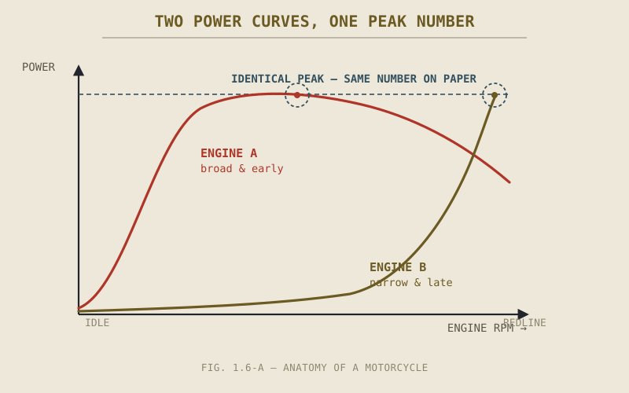

Two bikes, same year, same displacement, same claimed peak power, roughly the same price. On paper, a coin flip. Ride them back to back and one pulls hard and predictably from just above idle, while the other feels flat and uninspiring until a narrow band near redline, where it suddenly comes alive. Nothing on either spec sheet was false. So how did two "identical" motorcycles turn out to be nothing alike?
Chapter 1.5 gave you the words. This chapter, the last in Part I, gives you the judgment — because knowing what a number means and knowing what a number is actually telling you turn out to be two different skills, and manufacturers have a century of practice exploiting the gap between them.
The Number Is Real. The Impression Is the Trick.
It's worth being precise about what's actually happening on a spec sheet, because "manufacturers lie" is the wrong frame and leads to the wrong defense. Almost every figure on a spec sheet is genuinely, technically true, measured under a real and often standardized test. The skill this chapter teaches isn't detecting lies. It's noticing which true number was chosen, out of several equally true ones that could have been chosen instead, because the one that was picked happens to look the most flattering in isolation.
A dry weight is a real weight. A peak power figure is a real power figure, produced at some real RPM on some real dyno. The trick, if there is one, isn't in the number — it's in what got left off the page right next to it, and in trusting a single number to answer a question that actually needs two or three.
Weight: Which Number Are They Actually Giving You?
Chapter 1.5 introduced wet and dry weight and flagged that this is where the habit starts paying off. Dry weight excludes fuel, oil, and coolant — often 15 to 20 kilograms of very real mass that will be on the bike every single time it's actually ridden. A manufacturer advertising "the lightest bike in its class" using a dry weight figure isn't lying about that number. They're choosing the one of two true numbers that makes the claim work, while a competitor quoting wet weight honestly ends up looking heavier for a bike that might, fuelled up, actually weigh less.
The fix is simple once you know to look for it: always ask which figure you're looking at, and if a spec sheet doesn't say, assume dry weight and mentally add the difference before comparing it to a competitor's wet-weight figure. Comparing a dry number to a wet number is comparing two different things dressed up as the same measurement.
A Peak Number Is Not a Curve
This is the direct sequel to the torque-and-power distinction Chapter 1.5 spent real time on, and it's where that distinction earns its keep. A spec sheet lists one peak torque figure and one peak power figure, each tied to a specific RPM. What it doesn't show you is the shape of the curve connecting idle to redline — and that shape is most of what you actually feel when you ride the bike.
Two engines can share an identical peak power number and deliver it in completely different ways. One builds torque steadily from low RPM, staying strong through the middle of the rev range, so the power figure on the spec sheet shows up gradually and usably almost everywhere you're likely to ride. The other holds back until high RPM and then delivers most of its output in a narrow band near redline, so the same peak number on paper requires you to keep the engine spinning hard to access it at all. Nothing on the spec sheet distinguishes these two engines. The two motorcycles opening this chapter are exactly this scenario.
A single peak number tells you the top of the mountain. It tells you nothing about how steep the climb is to get there — and that climb is what you actually ride.

Two overlaid power curves reaching the identical peak figure — one broad and early, one narrow and late — with the shared peak number circled to show how identical it looks on a spec sheet.
Ratios Beat Raw Numbers
A raw number in isolation is nearly always less useful than the same number compared against another. Peak power alone tells you very little about how a bike will actually accelerate — a 150bhp engine hauling 220 kilograms of motorcycle has a very different job than the same 150bhp hauling 160 kilograms. Divide power by weight and you get a power-to-weight ratio, and suddenly two bikes with very different headline power figures can reveal themselves as closer performers than their spec sheets suggested, or further apart than they first appeared.
This isn't a special trick reserved for engineers. It's simply refusing to let one number stand in for a comparison that actually needs two. The same habit applies to torque against weight, to disc diameter against the weight and speed potential of the bike wearing it, and to fuel tank size against real-world consumption rather than a single claimed range figure. Part VIII will eventually give these ratios their full physical grounding; for now, the practical version is enough: whenever a spec sheet gives you an impressive number, ask what it needs to be divided by before it means anything.
What's Missing Is Also a Spec
Sometimes the most informative thing on a spec sheet is the line that isn't there. A listing that specifies "adjustable preload" on the front fork but says nothing about compression or rebound damping is telling you, by omission, that those adjustments don't exist on this model — a detail Part V will matter for far more than the travel figure that is listed. A budget model's spec sheet that lists a front disc diameter but doesn't mention ABS, in a market where ABS is common, is very likely telling you the bike doesn't have it.
Reading what's absent takes more practice than reading what's present, because it requires knowing what a complete spec sheet for that category of bike usually includes. That's less a fixed skill than an accumulated one — the more spec sheets you read across comparable bikes, the more an unusual gap starts to stand out on its own.
A Common Misconception, Cleared Up Early
It's tempting to conclude from all this that spec sheets are basically useless and only a test ride tells the truth. That overcorrects. A test ride tells you how a bike feels to you, on that day, on that road — genuinely valuable, but a sample of exactly one. A spec sheet, read correctly — wet weight, full power curve where available, ratios instead of raw numbers, attention to what's missing — gives you a fast, honest first pass at comparing bikes you haven't ridden yet, which is most of the bikes in the world at any given moment.
The goal was never to distrust every number. It was to stop trusting any single number by itself.
Where This Leads: Part I Complete
Six chapters ago, this book opened by asking why anyone would choose a machine that can't stand up on its own. Chapter 1.1 answered that a motorcycle isn't a smaller car, but a different kind of machine built around rider-vehicle interdependence. Chapter 1.2 explained the mechanical root of that fact — a line of contact instead of a rectangle. Chapter 1.3 showed that the machine itself is a coupled system where no part acts alone. Chapter 1.4 completed that system by placing the rider inside it, not outside it. Chapter 1.5 gave you the vocabulary the rest of the book depends on, and this chapter gave you the judgment to use that vocabulary critically instead of literally.
That's Part I. Nothing in it required taking anything apart. Part II does exactly that, starting with the component every one of this chapter's spec-sheet numbers was actually describing: the engine.
Key Concepts to Remember
- Spec sheets rarely lie outright — the skill is noticing which true number was chosen over another equally true one that would have looked less flattering.
- Always identify whether a weight figure is wet or dry before comparing it across bikes; dry weight alone can understate real-world mass by 15–20kg.
- A peak power or torque figure describes one point on a curve, not the curve itself — two engines can share a peak number and deliver it in completely different, differently usable ways.
- Ratios — power-to-weight above all — are almost always more informative than the raw numbers that produce them.
- What a spec sheet omits is often as informative as what it states, especially around suspension adjustability and safety equipment.
Cross-References
| ← Ch. 1.3 | Established that a specification only means something in relation to the rest of the coupled system — the ratio-thinking in this chapter is a direct, practical application of that idea. |
| ← Ch. 1.5 | Supplied the vocabulary — wet/dry weight, torque vs. power, adjustable damping — this chapter teaches you to read critically. |
| → Ch. 2.1 | Engine Fundamentals begins immediately after this chapter, giving full treatment to the torque and power curves only sketched qualitatively here. |
| → Pt. VIII | Motorcycle Physics — eventually grounds this chapter's ratio-based reasoning in full mathematical form. (Not yet published.) |